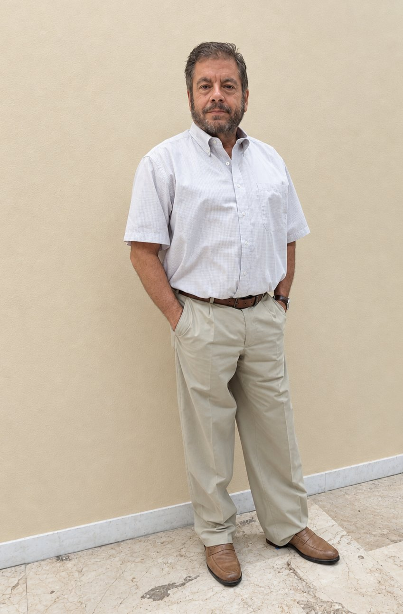
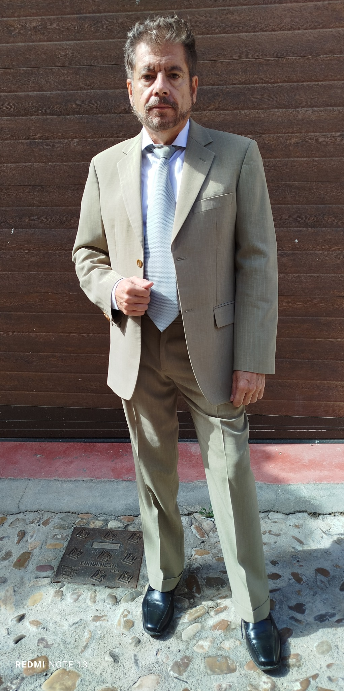

ACTOR · CINE · TELEVISIÓN · PUBLICIDAD · TEATRO
Vincent
Toletanus
Personajes, historias y encuentros. La interpretación como forma de estar en el mundo.
Ver videobookPRESENTACIÓN
Naturalidad, presencia
y pasión por contar historias.
Actor con experiencia en producciones audiovisuales y en teatro, tanto en escenario como en formatos inmersivos junto al público. Disfruto explorando personajes con naturalidad, cercanía y libertad.
EN PANTALLA
Videobook
Una selección de mi trabajo interpretativo.
EN IMÁGENES
Fotografías
Retratos y diferentes registros.


QUIÉN SOY
Sobre mí
Soy Vincent Toletanus, actor residente en Toledo, con experiencia en cine, televisión, publicidad y teatro. A lo largo de los años he participado en distintas series y películas, además de trabajar en propuestas teatrales convencionales e inmersivas.
Me caracterizo por una interpretación natural, desenfadada y por sentirme cómodo delante de la cámara y en contacto directo con el público. Mi formación combina la experiencia acumulada con cursos de interpretación realizados a lo largo del tiempo.
¿TRABAJAMOS JUNTOS?
Hablemos.
Para castings, proyectos y colaboraciones profesionales.
vincenttoletanus@gmail.com ↗ Instagram · @vincenttoletanus_actor ↗